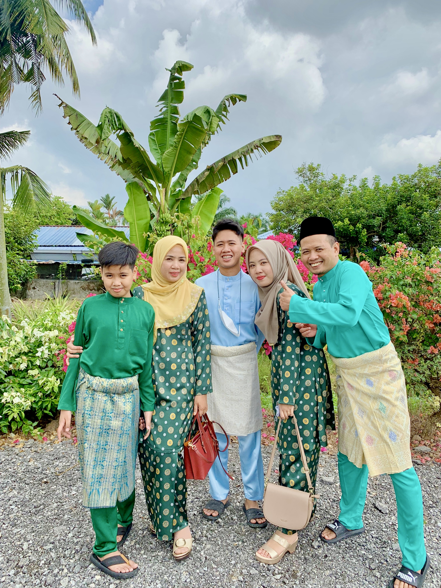

'*•.¸♡ ♡¸.•*' ABOUT MY FAMILY '*•.¸♡ ♡¸.•*'
A happy family is a group of people living together that supports each other, loves each other, and respects each other. They are the ones that give us a sense of security, nurture us, and teach us how to face challenges and solve problems.
A happy family is built upon strong bonds, trust, and communication. It is not just about living under the same roof, eating meals together, or going on holidays together. Rather, it is about creating an environment of warmth and love where everyone feels valued and heard. Each member of the family needs to have a clear idea about their own role within the family dynamic. Parents should understand their responsibility and importance in shaping the future of their children. Children, on the other hand, should learn to respect their parents, rely on them, and value their opinions.
Open communication fosters empathy and commitment within a family, reducing conflicts and misunderstandings. A happy family provides support, whether financial or emotional, to each member during challenging times, creating unity and strength. This environment of love, respect, and value allows families to weather adversity while remaining unified and intact. A great happy family is a timeless treasure that can be aspired to by all.
MY FAMILY MEMBERS
1) NOR HELMI BIN MOHD AROF - FATHER
2) NORHARTINA BINTI MOHD RAMSI - MOTHER
3) MUHAMMAD IQMAL BIN NOR HELMI - BROTHER
4) NUR IRDINA BINTI NOR HELMI - MYSELF
5) MUHAMMAD ISYRAF BIN NOR HELMI - YOUNGER BROTHER